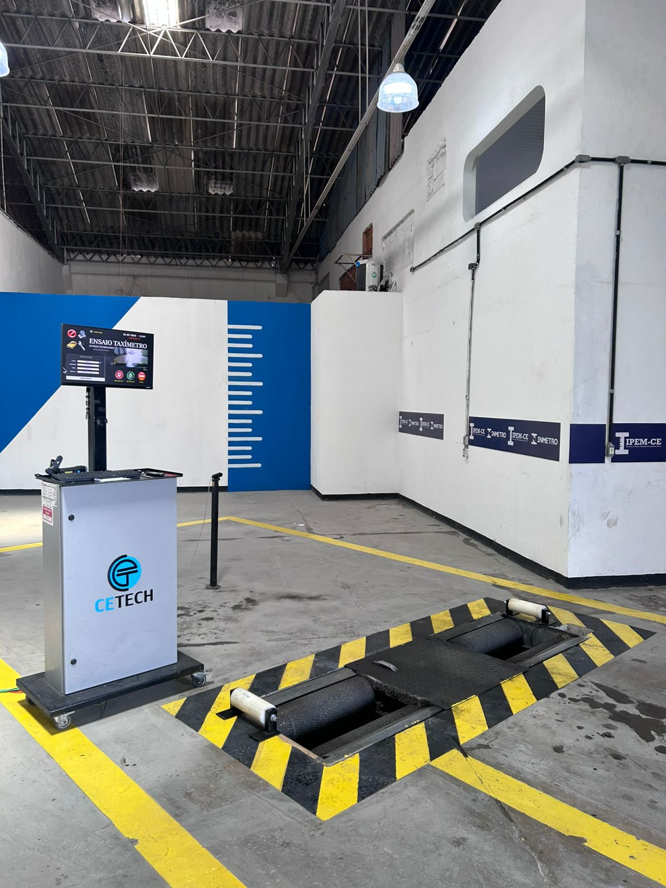
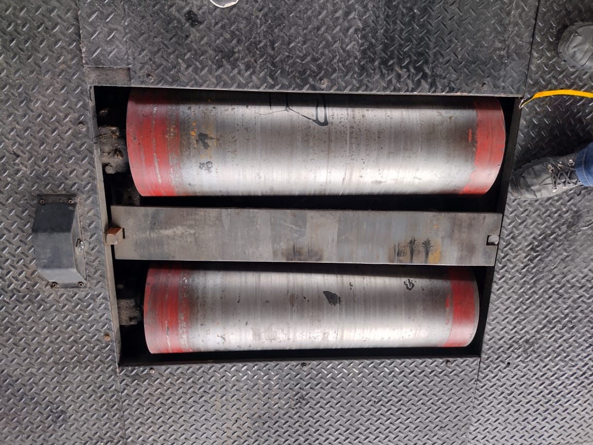
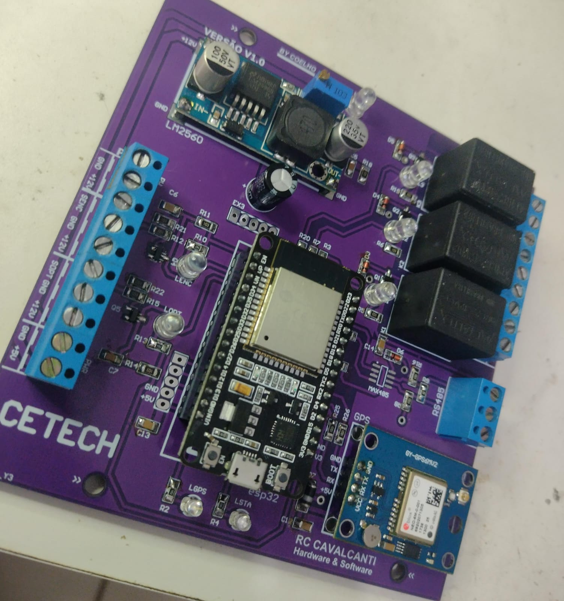
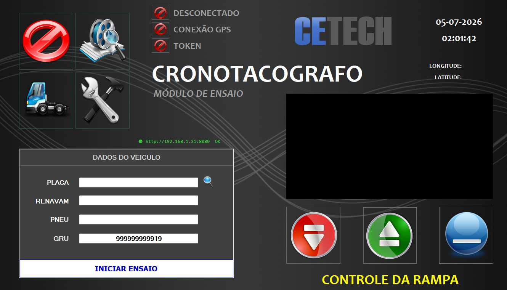
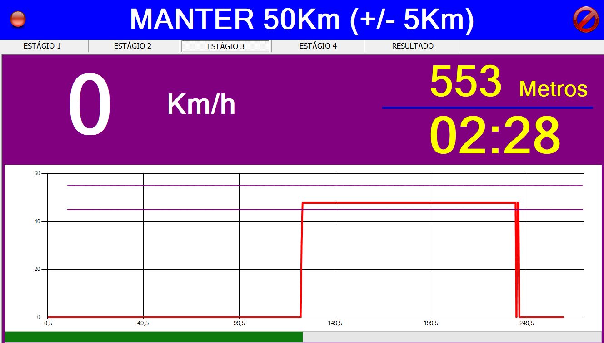
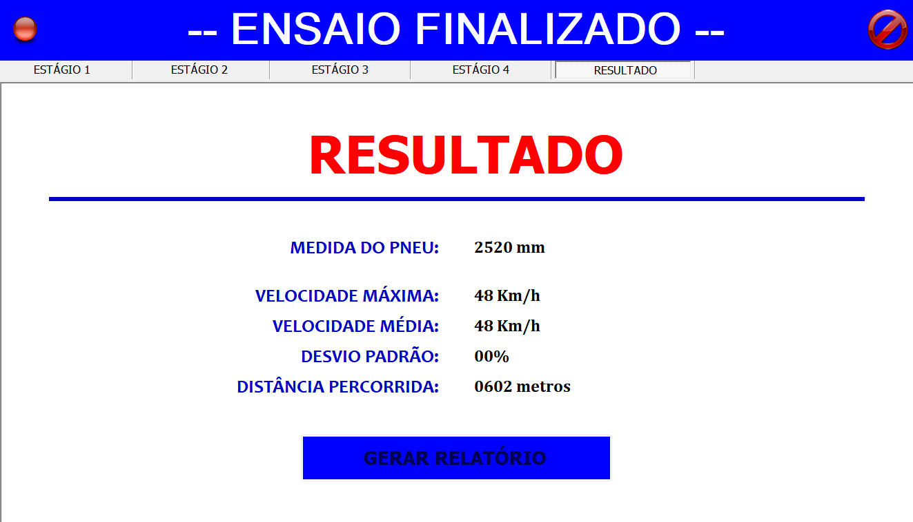
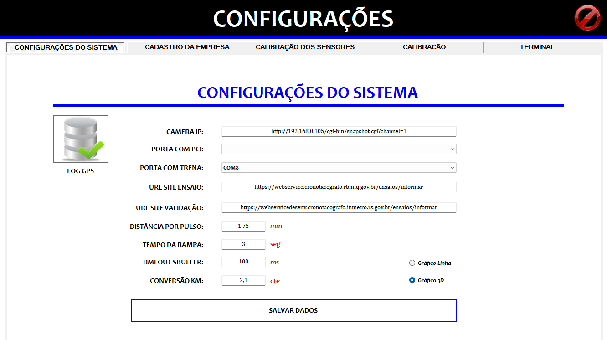
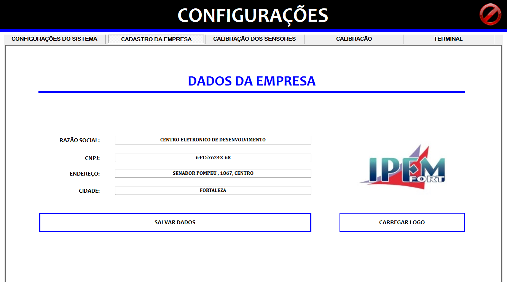
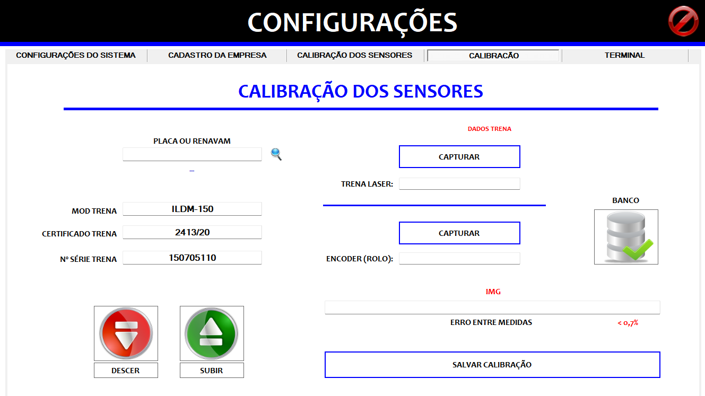

Sistema completo para calibração e ensaio de tacômetros veiculares. Captura de dados, gráficos em tempo real e envio criptografado ao INMETRO.

O Cronotacografo é um sistema desenvolvido para realizar ensaios de tacômetros veiculares, garantindo a conformidade com as normas do INMETRO. O sistema captura dados de velocidade e distância percorrida durante o ensaio, gerando relatórios completos com gráficos e resultados.
O veículo é posicionado sobre rolos de ensaio (dinamômetro) e o motorista é orientado a manter uma velocidade específica. O sistema registra todas as variáveis e envia os dados criptografados ao INMETRO via HTTP.
Todas as ferramentas necessárias para realizar, registrar e enviar os ensaios de tacômetros.
Registro completo com placa, RENAVAM, medida do pneu e código GRU. Busca e validação de dados integrados.
Captura automática da foto do veículo posicionado nos rolos de ensaio para documentation do teste.
Leitura em tempo real de velocidade (Km/h) e distância percorrida (metros) durante o ensaio.
Gráfico de velocidade x tempo com faixas de tolerância visualizadas durante todo o processo de ensaio.
Documento com velocidade média, máxima, desvio padrão, distância percorrida, duração e gráfico do ensaio.
Dados enviados via HTTP para o webservice do INMETRO em XML criptografado, garantindo integridade.
Verificação da localização geográfica da empresa para garantir a autenticidade do ensaio.
Controle eletrônico da rampa de posicionamento (subir/descer) com interface visual intuitiva.
Procedimento de calibração com trena laser (ILDM-150) e encoder, com cálculo automático de erro.
Hardware robusto desenvolvido para ambiente industrial e specificado para alta precisão.


ESP32-WROOM-32
NEO-6M (GY-GPS6MV2)
RS485 + MAX485
LM2560 (12V → 5V/3.3V)
3x Relé (controle rampa)
ILDM-150 (certificada)
Interface completa e intuitiva para todas as etapas do ensaio.

PrincipalEntrada de dados do veículo (placa, RENAVAM, pneu, GRU), status de conexão GPS e controle da rampa.

Tempo RealMonitoramento em tempo real com velocidade (Km/h), distância (metros), tempo e gráfico com faixas de tolerância.

ResultadoMedida do pneu, velocidade máxima e média, desvio padrão e distância percorrida. Opção de gerar relatório.

ConfigPortas COM (PCI, trena), URLs do webservice INMETRO, parâmetros de calibração e timeout.

EmpresaDados da empresa: razão social, CNPJ, endereço, cidade. Upload do logo para identificação.

CalibraçãoCalibração com trena laser (ILDM-150) e encoder. Cálculo automático de erro entre medidas (< 0,7%).
O ensaio é dividido em 4 estágios sequenciais, cada um com uma velocidade alvo específica.
Registro do veículo com placa, RENAVAM, medida do pneu e código GRU. Verificação do GPS.
Veículo sobre os rolos do dinamômetro. Controle da rampa para subir e posicionar corretamente.
Motorista mantém velocidade alvo. Sistema captura dados em tempo real por 4 estágios.
Geração do relatório com resultados e envio criptografado ao INMETRO via XML/HTTP.
| Parâmetro | Valor |
|---|---|
| Distância por Pulso | 1,75 mm |
| Tempo da Rampa | 3 segundos |
| Timeout SBuffer | 100 ms |
| Conversão Km | 2,1 cte |
| Microcontrolador | ESP32-WROOM-32 |
| Módulo GPS | NEO-6M (GY-GPS6MV2) |
| Comunicação Serial | RS485 (MAX485) |
| Trena de Calibração | ILDM-150 (2413/20) |
| Nº Série Trena | 150705110 |
| Erro Máximo Permitido | < 0,7% |
| Tipo de Gráfico | Linha / 3D |
| Webservice INMETRO | https://webservice.cronotacografo.rbmlq.gov.br |